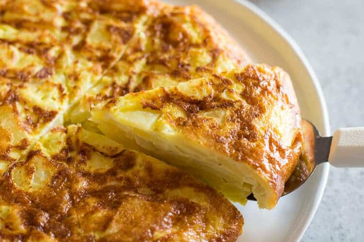

Description
The tortilla de patata is a lovely brunch or anytime dish that's simple to make.
I would argue that nothing is more fun than chomping on some onions, potates,
cheese, and egg. Yummy!
Supplies
- Cooking Oil of Choice
- Eggs
- Little Potato Guys
- ONIONS
Steps On Me Guide
PREP WORK
Dice the potates into little pyramid shapes, about the size of a monopoly token...
Dice the onions and mix with the potato pyamids.
Combine the potato guys and onion boys in a bowl and set aside.
- Heat up a (preferably nonstick or enamel) pan on medium heat with cooking oil.
- Crack just like a ton of eggs into a jar or something and shake it up until beaten.
- Mix the beaten eggs with the potato and onion guys in their bowl home.
- Thickly layer that in the preheated and oiled pan and wait until and undercrust forms
- With the mission impossible theme playing, flip that queen and cook through on the other side.
- Bust out the toppings of choice, I love curry ketchup for this recipe just to piss off the masses...
Up TOP!